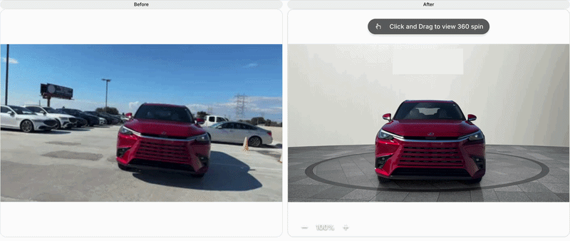
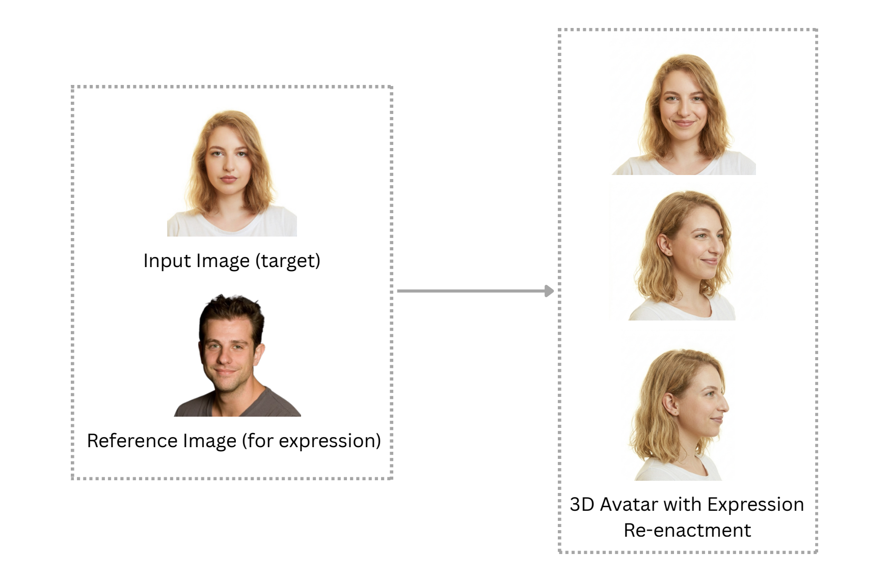
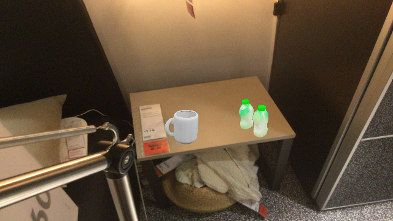
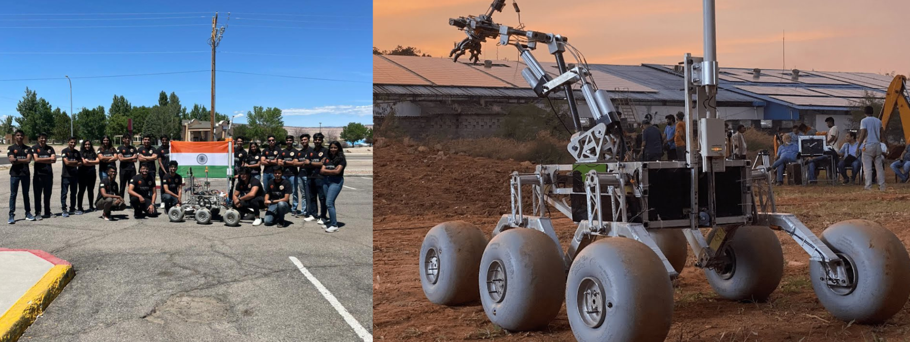

Hi I'm Dishita Midha
Computer Vision Engineer with experience spanning across ML-based vision, Generative modeling, 3D reconstruction, Spatial Intelligence, and Robotics perception. Skilled at collaborating in cross-functional teams and driving complex projects from initial concept to production-grade deployment.

I am an Applied Research Engineer at Spyne.ai advancing Studio AI, an automated cataloging platform for the automotive industry leveraging 3D computer vision and generative modeling.
Previously, I interned twice at Samsung Research, Bangalore, where I worked on XR applications with a strong focus on the intersection of 3D reconstruction and generative vision. I have also interned at Jio AI–CoE in a similar domain.
I graduated in 2024 from Manipal Institute of Technology, Manipal with a Bachelor's degree in Data Science and Engineering. During my undergraduate studies, I was part of the AI/Perception team at Mars Rover Manipal, a cross-functional student team that designs and builds Mars rover prototypes and competes in various international robotics competitions across the U.S. and Europe each year.
Outside of work, I enjoy traveling, hiking, cooking, and strength training. Learning the piano is next on my list. I’m always open to connecting with people from diverse backgrounds — feel free to reach out!
Video to 360 Stabilisation
Developed the core stabilization logic for a video-to-360 spin pipeline that converts unconstrained handheld videos into consistent studio-quality turntable spins. Designed algorithms to correct car placement, tilt, and scale across frames under camera shake and jitter, using extrapolated 3D geometric priors to enforce spatial consistency and canonical alignment for stable downstream view synthesis. Live on Spyne's platform.

Missing View Generation
Led the development, fine-tuning, and deployment of a Multi-View Diffusion pipeline (Stable Diffusion backbone) to generate novel car views from <8 images. The system estimates camera poses and depth to identify missing angles along a circular trajectory and conditions the model on camera embeddings, warped projections, and RGB inputs. Achieved 18–20 dB PSNR and 0.80–0.85 SSIM, competitive with SOTA.

Improving Camera Pose Estimation under Sparse-View and Edited Imagery Constraints
Conducted research on improving camera pose estimation in sparse-view vehicle imagery. Fine-tuned feature matching pipelines (SuperPoint + LightGlue) on car-specific datasets and developed a Blender-based 3D–2D annotation tool that enables semantic keypoints to be labeled once in 3D and automatically projected across views, improving annotation efficiency and consistency. Explored approaches for improving robustness under limited viewpoints, including VGGSfM integration and training transformer-based models such as FLARE for background-independent pose estimation in challenging scenarios (e.g., unnatural backgrounds).
Video to 3D
Built a video-to-3D car reconstruction pipeline using advanced splatting-based representations to better model challenging specular and transparent surfaces. Integrated train-time pose refinement to improve reconstruction fidelity and reduce artifacts such as floaters, and implemented point-of-interest localization by projecting image-space detections into 3D via raycasting and depth alignment. Contributed in extending the web viewer (Three.js) to support rendering of the new representation.
Interior Hotspot Tracking
Developed and deployed a YOLO-based pipeline for 2D hotspot detection and tracking in car interiors, projecting tracked points onto panoramic views. Improved the super-resolution model for focus images of car parts to enhance image quality with fewer artifacts.

One-shot 3D Human Head Avatar Generation with Expression Re-enactment
Proposed and developed a multi-model geometry-aware pipeline that reconstructs controllable 3D head avatars from a single frontal image and synthesizes realistic novel viewpoints within a −90° to +90° range. Achieved an average validation PSNR of 28–30 with an inference time of ~2 seconds, while improving expression re-enactment for complex facial motions (e.g., pouting, cheek puffing) through FLAME parameter refinement using facial landmarks and image features.

Conceptual illustration of the project. Actual results cannot be shown due to company confidentiality.
Worked on estimating 3D shape and pose of animals from single images. Implemented non-rigid mesh registration using surface triangulation maps to align deformable shapes, and explored diffusion and GAN-based approaches for learning generative shape spaces of 3D meshes.
Visual Quality Enhancement and Watermark Removal for Documents
Developed a document enhancement model for watermark removal and restoration of degraded documents (photocopies, folds, artifacts). Built a custom training dataset using Augraphy with extended watermark generation capabilities and optimized a Pix2Pix-based model using a parallelized patching approach for sharper outputs. Deployed an end-to-end FastAPI pipeline that produces high-resolution, unwatermarked documents with ~0.6s inference time.
Synthetic Dataset Generation Pipeline
Developed a pipeline (team of three) for generating synthetic datasets by reconstructing 3D meshes from objects in images and compositing them into 2D scenes through randomized placement and orientation with collision avoidance. Designed a plane detection and segmentation method to identify valid horizontal surfaces for object placement achieving ~70% accuracy. Utilized POINT-E and DMTET for 3D reconstruction and automated large-scale rendering in Blender. The project received the Excellence Award for outstanding contributions.

Autonomous Navigation & Localization Systems
Worked in an interdisciplinary student team building Mars rover prototypes, contributing to the AI/Perception stack for autonomous navigation. Developed localization and obstacle avoidance algorithms and deployed them on embedded systems using real-world sensor data. Contributed to top finishes at international rover competitions including the European Rover Challenge, IRDC, and University Rover Challenge.

Generative Modeling
Diffusion models, GANs, multi-view synthesis, novel view generation
3D Reconstruction
Gaussian Splatting, NeRF, Structure from Motion, depth estimation
Pose Estimation
Feature matching, camera calibration, sparse-view pose recovery
Robotics Perception
LiDAR-based obstacle avoidance, sensor fusion, edge deployment
Representation Learning
Autoencoders, VAE, Triplanes, Normalizing flows
Production ML
Triton inference, GPU autoscaling, latency-aware deployment